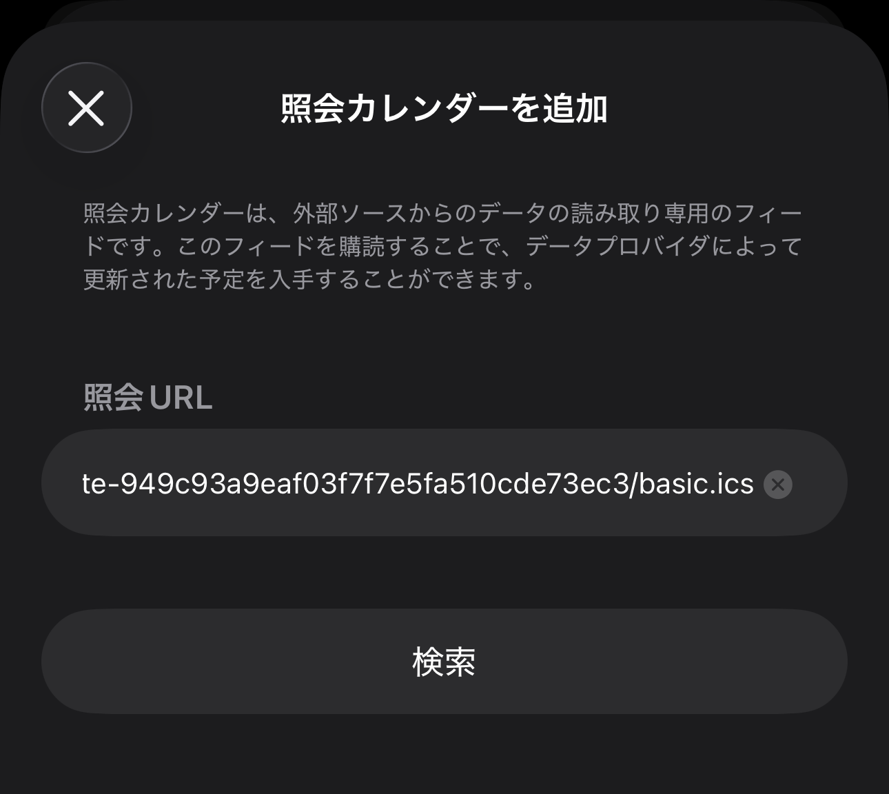
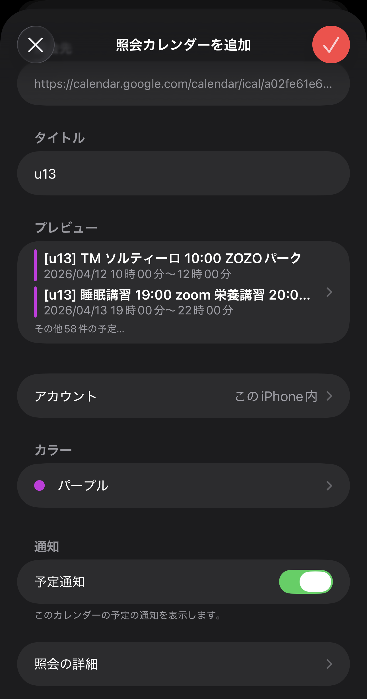

スケジュールPDFが更新されたらメールで通知することができます
yosuke.fujii@gmail.comまでメアドをお知らせください
↓PDFの予定が更新されるとこんなメールが届きます
iPhoneの人は以下リンクから標準カレンダーにスケジュール登録できます
Androidの人はダメですやらないでください
Androidの人はGoogleカレンダーに招待を送るので、Androidで登録しているGoogleアカウントのメアドを前述のメアドに送ってください
試運転中なので、もし間違いを発見したらお知らせください
yosuke.fujii@gmail.com
リンクをクリックすると以下の様な画面がでます これが出ればOKです進めてください
異なる画面が出たらダメなのであった時に相談ください。

